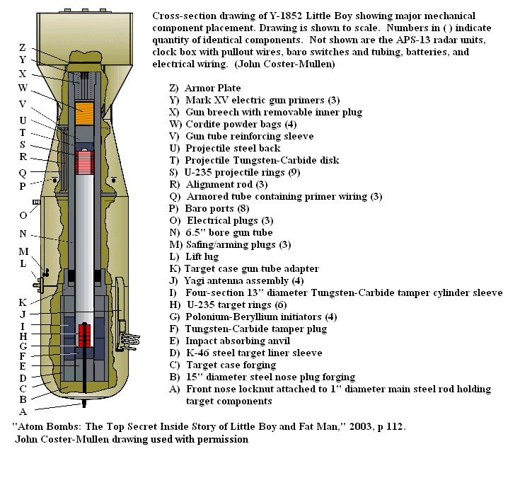

A Simple, Reliable Concept
The fundamental challenge of a fission bomb is to bring enough fissile material together—a "supercritical mass"—before it has a chance to blow itself apart. For the Uranium-235 used in Little Boy, the solution was straightforward: create two separate, "sub-critical" pieces and slam them together at high speed.
This "gun-type" method was so mechanically simple and reliable that the design was never fully tested before its use over Hiroshima. The scientists were confident it would work.

Inside the Mechanism
Looking at the cross-section, the design really does resemble a short cannon barrel. At the rear of the bomb, bags of conventional explosive (W - Cordite) act just like gunpowder. When ignited, they fire a hollow uranium "projectile" (S) down the smooth-bore gun tube (N).
At the other end sits the "target," another piece of uranium (H). When the projectile slams into the target, the two sub-critical masses combine to form a single supercritical mass. To ensure the reaction starts efficiently, initiators (G) release a spray of neutrons at the precise moment of impact. The entire assembly is wrapped in a dense tamper (J) to help hold the mass together for just a few extra microseconds, allowing the chain reaction to consume more of the fuel before it disintegrates.